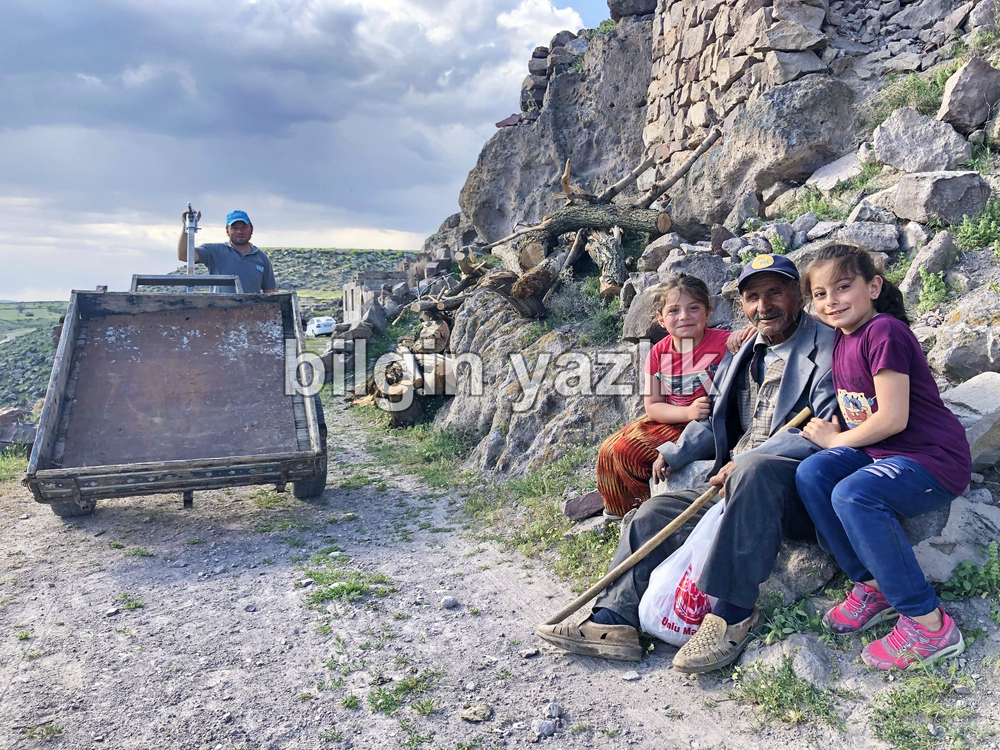

KAYSERİ’NİN KAYIP VADİSİ KORAMAZ’IN SİZE SÖYLEYECEKLERİ VAR!
Ben Koramaz Vadisi, ne zaman oluştuğumu size tam olarak söylemem mümkün değil, bir deprem kırığı oluşumu olduğumu ise yakınımdan geçen fay hattından dolayı tahmin edebilirsiniz. Yer yer kafanızı kaldırdığınızda gök yüzünü dahi göremeyeceğiniz ağaçlarla kaplı dar yollarımda yürürken Roma’dan, Bizans’tan, Anadolu Beyliklerinden, Osmanlı’dan ve nihayetinde Türkiye Cumhuriyeti’nden yani kendinizden izler göreceksiniz. Sizden öncekiler de tıpkı sizin gibi suyumdan içtiler, ağaçlarımdaki meyvelerden yediler, mağaralarımda yaşadılar. Hatta Ağırnas’a doğru çıkarsanız Mimar Sinan’dan bile izler göreceksiniz. Sinan yirmili yaşlarına kadar dar patikalarımda at koşturdu, serin sularımdan içti, sıcak yaz akşamlarında platolarımda Erciyes’i seyre daldı. Sinan’a ben ilham verdim dersem abartmış olmam. Batı çıkışımda yer alan Asurluların binlerce yıl önce kurdukları dönemin ticaret kolonilerinin merkezi olan Kültepe’yi de unutmayın. O dönemde Kültepe’de yaşayan halkın, çok sayıda tatlı su kaynağına, yüzlerce ağaca ve korunaklı mağaralara sahip olan benden yani Koramaz’dan istifade etmediğini düşünmeyin sakın. Bundan dolayıdır ki “Sizlerle yani insanlarla olan birlikteliğimizin geçmişi binlerce yıl öteye dayanmaktadır”. Zaten bağrımdan geçen huzur veren yollarda dolaşırken binlerce yıllık bu geçmişi hem hisseder hem de insan eli ile işlenmiş mağaralarımda, kağnı tekeri ile oyulmuş yol izlerimde, sadece temeli kalmış anıtsal yapılarımda, göz alıcı boyalarla süslenmiş kiliselerimde görürsünüz.
Ancak sizler beni unuttunuz. Araştırma yaptığınızda siz de fark edeceksiniz ki Koramaz Vadisi’nin adı son iki yılda sıklıkla gündeme gelmeye başlamıştır. Daha önce ise çok nadiren adıma rastlanmaktadır. Peki ne oldu da kıymete bindim? Ne değişti de insanların dikkatini çekmeye başladım?
Konuyu biraz daha açıkça ortaya koyabilmek için geriye gidelim. Koramaz adının yer aldığı ve sizlerin ulaşabileceği en eski yazılı belge Osmanlı dönemine aittir. Adım yani Koramaz, Osmanlı döneminde bir nahiye adı yani kendisine bağlı köylerin bulunduğu bir üst yönetim birimi idi. Bu ismin kaynağı ise Koramaz nahiyesine bağlı olan köylerin tamamının aynı dağın eteğinde bulunuyor olmaları idi, bu dağın adı da bugün olduğu gibi Koramaz Dağı idi. Yani aslında adımın kaynağı hemen doğu tarafımda yükselen Koramaz Dağı’ndan gelmektedir. Bana özel olan Koramaz Vadisi adı ise ilk defa Ağırnas Belediye iken Belediye Başkanlığı görevini yürüten Mehmet Osmanbaşoğlu ve araştırmacı yazar Hüseyin Cömert tarafından el birliği ile telaffuz edildi. Üstelik Hüseyin Cömert, Koramaz Vadisi adını taşıyan, 2008 yılında Ağırnas Belediyesi desteği ile basılan bir de kitap kaleme aldı, bu kitap beni bir bütün olarak ele alan ilk kitap olma özelliğini taşımaktadır ve benim hakkında tarihi belgelere de dayanan önemli bilgiler içermektedir. 2008’de yayınlanan bu kitaba rağmen o gün hak ettiğim ilgiyi göremedim. 2018 yılına kadar çok azınız adımı biliyordu, arada sırada yürüyüş yapmak için gelen vefakâr dostlar da olmasa yapayalnızdım. Fakat kaderim 2018 yılında bir anda değişmeye başladı ve bugün şehirdeki yöneticilerin birçoğunun dilinde dolanıyorum. Bundan dolayı mutlu muyum? Evet tabii ki mutluyum. Bu duruma Unesco Dünya Geçici Miras listesine dahil olmam vesile oldu. 2008 yılında adıma kitap yazılmış olmasına rağmen 10 yıl boyunca neden Unesco listesine giremedim? Neden insanların gündeminde hak ettiğim yeri edinemedim?
Ben talihsiz bir vadiyim, çok ilginçtir ki bağrımda yaşayan insanlar dahi beni bir bütün olarak fark edemediler yıllarca. Bağrımda yaşan yedi köy, beni yedi ayrı parça halinde işledi, yedi parçamın bir bütün olabileceğini hiç düşünmediler yıllarca. Ben, Ağırnaslılar için Ağırnas ya da Akbin Vadisi iken, Turanlılar için Turan Vadisi oldum hep. Size kızmıyorum, çünkü on iki km uzunluğa sahip olan kollarıma yukarıdan bakmadığınız sürece, bir bütün olarak görmeniz mümkün değil. İşte tam olarak 2018 yılında meydana gelen değişim bu oldu, yani bütüncül bir bakış açısı ile bana bakmaya başladınız. Sadece bu değil tabii ki değişen; 2018 yılından itibaren bünyemde yer alan ve çok az bir kısmına bugün şahit olduğunuz doğal ve kültürel envanteri sistematik olarak analiz etmeye başladınız, yani adım adım, karış karış beni gezmeye başladınız, taşıdığım doğal ve kültürel mirasımı envanter halinde çıkarmaya başladınız. Camilerim, çeşmelerim, setenlerim, bezirhanelerim, kiliselerim, columbariumlarım … tek tek kayıt altına alındılar ve toplu bir envanter olarak şehrin huzuruna çıkarıldılar. Devasa envanteri gören uzmanlar, yetkililer ve hatta bağrımda uzun yıllardır yaşayan insanlar hayranlıkla bana bakmaya başladılar ve aslında Koramaz’ın yani benim “Kayseri’nin Kayıp Vadisi” olduğumu anlamaya başladılar.
Sonunda nihayet hak ettiğim ilgiyi görmeye başladım ve Unesco Dünya Geçici Miras listesine girmeyi başardım. Bu tablo benim aslında gerçekten de çok büyük değer olduğumun tescili olmuş oldu ancak bu listeye girmiş olmak bana insan ilgisi çekmenin ötesinde bir fayda sağlamıyor. Benim çok ciddi sorunlarım var, bu sorunlara sadece yerel yönetimler, ilgili Müdürlükler değil tüm toplum olarak el birliği ile müdahale etmeniz gerekiyor. Ben tükeniyorum! Evet yanlış duymadınız, beni korumazsanız çok yakında yok olacağım, sizden yardım istiyorum, duyun beni! Sonunda sesimi sizlere duyurabiliyorum, lütfen aşağıda yazdığım sorunlarımı okuyun ve bana yardım edin:
- Kuruyorum! Damarlarımda akan sular birer birer çekiliyorlar. Kayalarımın arasından sızan, serin ve tatlı sularım azalıyor. Bu sularla beslenen tam içimden geçen Koramaz Çayı kuruyor. Bu sularla beslenen ağaçlarım, bağlarım kuruyor, hayvanlarım ölüyorlar. Bağrımda dolanırken çevrenize iyi bakın, kuruyan ağaçları, susuzluktan dolayı terk edilmiş bağları göreceksiniz. Sularımın kaynağı hemen doğu tarafımda yer alan Koramaz Dağı, bu dağda son zamanlarda büyük taş ocakları işlettiğinizi biliyorum, acaba suyumun azalmasına bu taş ocaklarının bir etkisi var mıdır? Lütfen araştırın, bana yardım edin. Bir de yine kulağıma yeni maden araştırmaları yaptığınız geliyor, maden bulursanız ve yeni maden ocakları açarsanız bana ne olacak? Hiç düşünmüyor musunuz beni?
- Derinlerimden yukarılara doğru çıktığınızda uçsuz bucaksızmış gibi görünen platolarımı göreceksiniz. Bu platolarda taş ocakları işletiyorsunuz, üstelik yeni de değil binlerce yıldır aynı gelenekle buralardan taş çıkarıyorsunuz. Elbette yapacaksınız, sizler ekmeğinizi gerekirse taştan çıkaracaksınız, buna diyeceğim yok ancak yaşamın ve kültürel mirasın başladığı noktanın hemen sıfırında taş çıkartmak zorunda mısınız? Taşları keserken ağır iş makinelerinizin yaptığı titreşim mağaralarımı yıkıyor biliyor musunuz? Kestiğiniz taşların bir kısmı bağrıma yuvarlanıyor, bana zarar veriyor, bunu biliyor muydunuz? Çok mu zor az ötede aynı işi yapmak?
- Binlerce yıldır siz insanoğlu ile beraberim ama ilk defa tam içimden kanalizasyon hattı geçiyor. Buna itirazım yok ben büyük bir vadiyim bunu da tolere edebilirim. Yoğun yağışlı zamanlarda yaptığınız hat tıkanıyor ve içinden akan tüm pis su, içerisinde su kaplumbağaları da yaşayan çayıma karışıyor. Bir de suyum azalıyor demiştim size, bu kadar sorunumun yanında kanalizasyon hattınız çayımdan akan suyu emiyor ve azalan suyumu daha da azaltıyor. Yağışların azaldığı yaz aylarının son döneminde gelin, bakın, çayımın artık kuruduğunu göreceksiniz. Peki ne olacak benim günahsız su kaplumbağalarıma?
- Dedim ya size binlerce yıldır beraberiz diye. Bu beraberlik sonucunda sizler kayalarımı işlediniz, mağaralar yaptınız, yer altı şehirleri kazdınız, çoğu Bizanslılar tarafından yapılan kaya kiliseler inşa ettiniz. Sizden öncekilerin inşa ettiği bu kültürel miras, sizlerin defineci dediği aranızda yaşayan art niyetli insanlar tarafından sürekli talan ediliyor. Her gün bir yerimi kazıyorlar, mağaramı yıkıyorlar, kilisemdeki benzersiz resimleri tahrip ediyorlar. Altından daha değerli olan şeyin bir bütün olarak ben olduğumu unutmayın, bana zarar vermeyin!
- Artık daha popülerim, Unesco listesine dahil olunca beni daha çok sevmeye başladınız. Bunun sonucu olarak da bana sahip olmaya çalışıyorsunuz. Evvela şunu söyleyeyim binlerce yıldır bana sahip olmak isteyen sizin gibi binlerce insana şahit oldum, merak etmeyin, olamazsınız, ben hepinizin ortak malıyım. Beni bireysel olarak sahiplenmek istemeniz tamamen iç güdünüzden kaynaklanıyor ve sonuçsuz bir gayrete itiyor sizleri. Lütfen doğal mirasıma zarar verip bağrımın tam ortasına evler yapmayın, ben doğal bir vadiyim, beni böyle kabul edin. Çadırınızı alın gelin, beraber uyuyalım ama lütfen betonla kirletmeyin beni.
- Az önce anlattım, kanalizasyon hattı yaptınız diye, evet bu hattı yaparken bir de üstüne yol inşa ettiniz. Bu yol eskiden yoktu, binlerce yıldır insanlar yamaçlarımdan dar patikalarda seyahat ettiler ama siz tam bağrımdan yol geçirdiniz, üstelik tek bir yol değil, gelin gezin açılmış başka yollar da göreceksiniz. Bu yollardan kamyon da dahil olmak üzere her türlü araç geçiyor, her seferinde ciğerlerime duman üflüyorlar, mağaralarımı titretiyorlar, kuşlarımı korkutuyorlar. Gelin yapmayın, motorlu araçlarınızla keyif için ezmeyin beni!
- Ben ağaçları çok severim, binlerce yıldır çok çeşitli ağacım oldu. Bugün hala onların torunları var içimde. Bazıları şu an üç yüz yaşında olan ceviz ağaçlarım en sevdiklerim arasında yer alıyorlar. Bir de değinmeden geçemeyeceğim sizden öncekilerin Dimitre dediği sizin ise Turan dediğiniz bölgemde fındık ağaçları var, onları da çok seviyorum. Fakat siz ağaçlarımı kesiyorsunuz, benim kıymetli evlatlarımı birer birer yakıyorsunuz, mobilya yapıyorsunuz. Her bir yanımı kendi aranızda bölüşmüşsünüz, yeni ağaç dikmek isteyene de müsaade etmiyorsunuz. Peki ne olacak o zaman benim halim?
Bunları size umutla anlatırken bir yandan da hüzünleniyorum. Unesco listesine girmiş olmak size sağladığı kadar umarım bana da fayda sağlar, benim problemlerim var ve bana yardımcı olabilecek, bu problemleri çözebilecek tek makam sizlersiniz. Bugün özgürce kuş cıvıltıları arasında ve bol oksijen alarak yürüyebildiğiniz yollarımdan yarın çocuklarınız sonraki yıllarda da torunlarınız yürüsün istiyorsanız bana kulak vermenizi rica ediyorum.
Bilgin Yazlık / 26 Haziran 2020


Bu yazı taliyol arşivinden taşınmıştır. · özgün kayıt